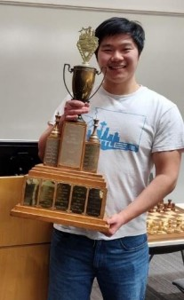

He Brothers Chess
Daniel He
- Achieved FM title in 2025
- 2024 Washington State Champion
- 2026 Washington Open Co-Champion
- 3-Time Washington Junior Closed Champion (2014, 2015, 2016)
Samuel He
- 2-Time Washington Open Co-Champion (2016, 2023)
- 2nd Place Grade 11 National Champion
- 2-Time Washington Junior Closed Champion (2016, 2017)
Daniel and Samuel both achieved the National Master title before they entered high school through the local tournament circuit, the same scene many of their students are part of. They coached the Redmond High School chess team to the 2017 State Championship and a top-5 finish at Super Nationals. Most recently, Daniel became the 2024 Washington State Champion and achieved the FIDE Master title. They hope to share their passion for chess with others — whether working with beginners picking up the game for the first time, nurturing up and coming prodigies, or serious adult improvers.

Daniel — 2024 WA State Champion

Samuel — WA High School Team Trophy

He Brothers in action
Student testimonials
What our students say
"My US Chess Federation rating had bounced around the 1100s for years before starting lessons with Sam. Within a few months of our weekly lessons I was able to push my regular rating over 1400. Rather than the cascade of complex analysis other titled players have given me, Sam has a knack for recognizing where his student's understanding is and he meets them there. His instruction is consistent and each lesson always builds on the last. Repeated mistakes on my part were met with patient reminders rather than frustration as he guided me first to recognize imbalances on the board and then improve my ability to translate what those imbalances were telling me to do next."
"I have benefited a lot from their concepts. Coach Daniel helped me go from beginner level to over 2000 USCF. He taught me how to blend multiple principles together, not focusing on one playing style but looking at positional and tactical cues to aid with calculation and overall plan. For example, from 3 B's, I have learned to adapt to different scenarios, playing aggressive or more patiently, making myself more unpredictable to my opponents."
"I've been taking online lessons with Daniel for about 7 years and I strongly recommend! The lessons have greatly improved my chess and I've gained approximately 400 rating points. Daniel is a wonderful coach and really examines my play to understand what is best to focus on; importantly we thoroughly review my games and thought processes. The power of the initiative, how to make plans using the '3 B's' and pawn structure, and improving my mindset at the board have all been instrumental concepts that Daniel has taught me about and helped me to improve. Looking forward to continued chess improvement!"
"I really enjoyed the training games I played with Samuel. The games were very useful for practicing new openings and learning how to navigate through the ensuing middlegames, which in turn gave me a strong idea of the areas I needed to improve on. After each training game, we analyzed it together, which helped me understand my mistakes and identify new ways to improve. Samuel was both friendly and supportive, which made the training sessions enjoyable and motivating."